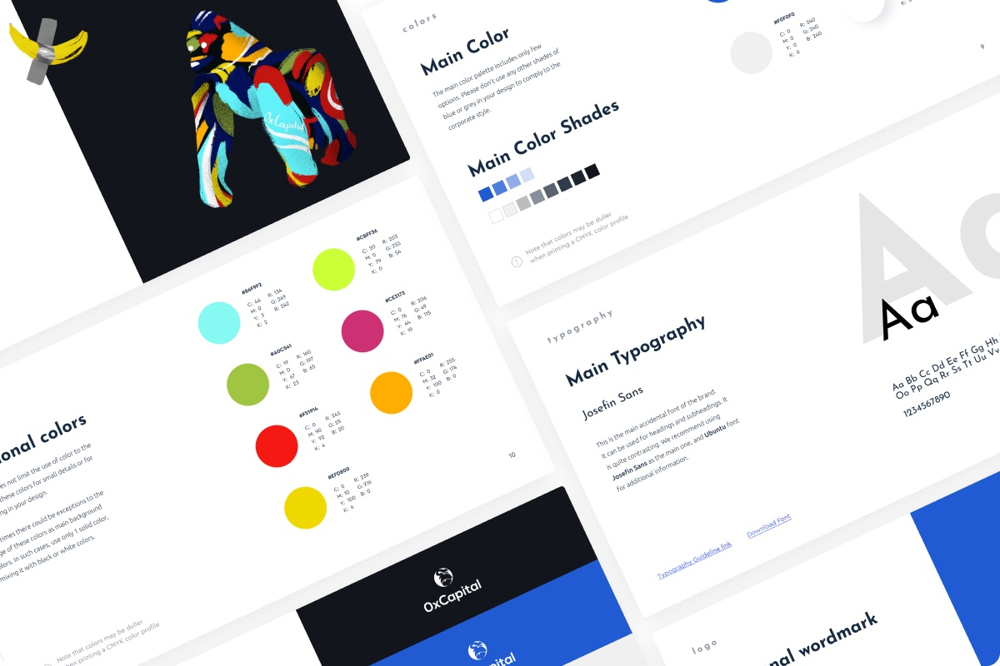
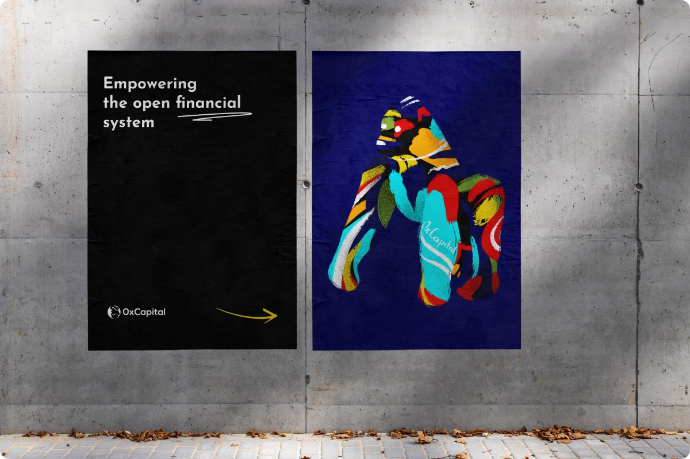
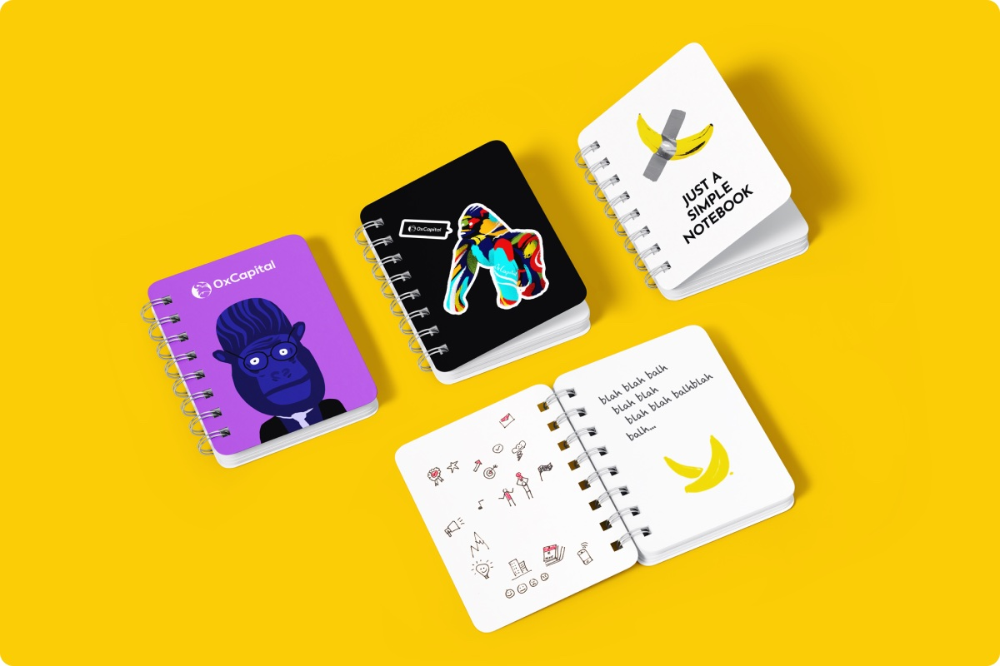
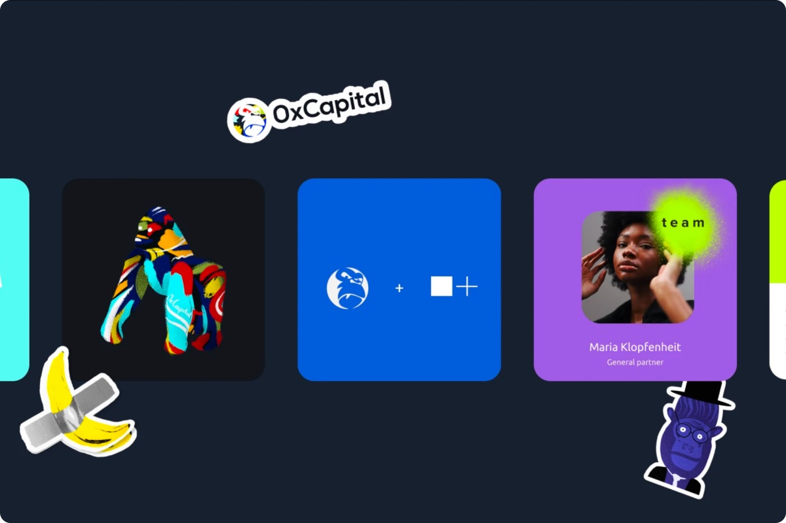
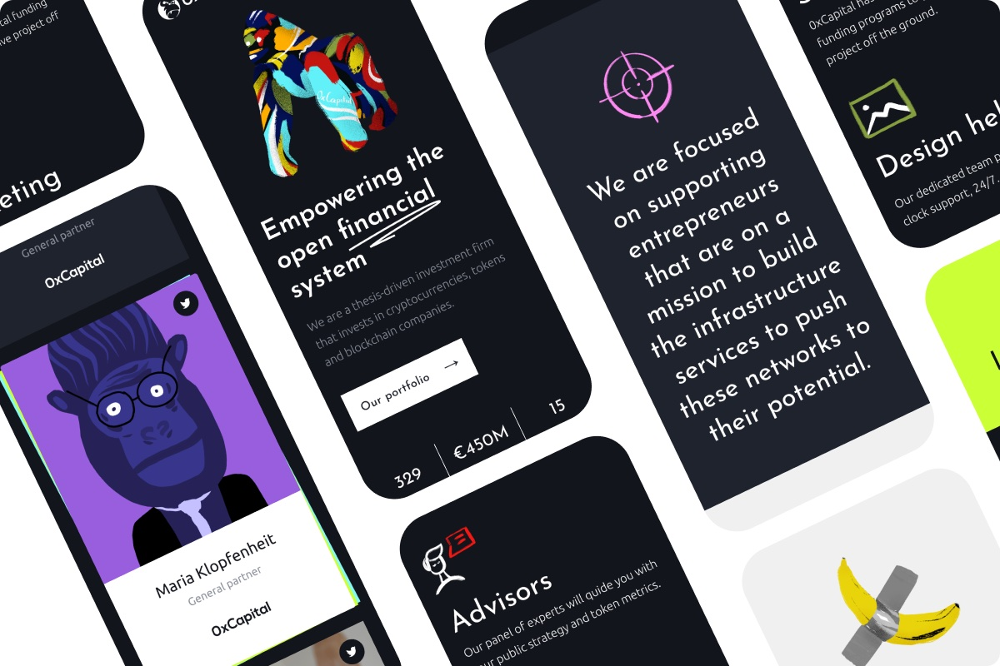
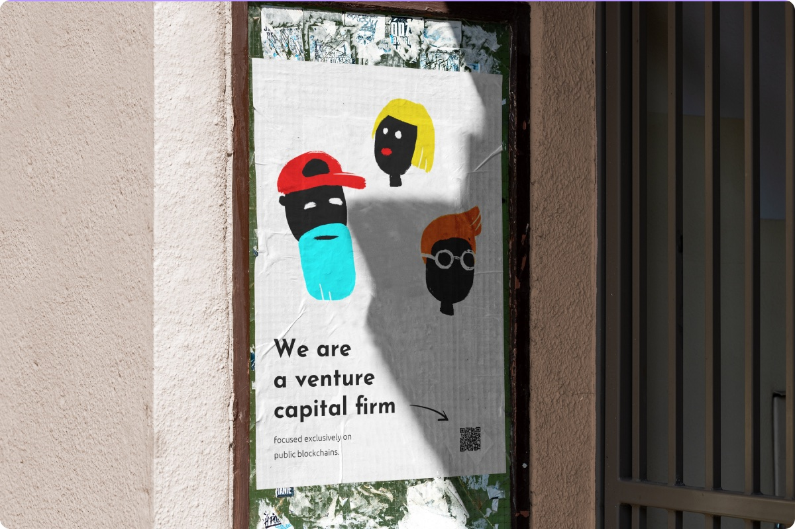
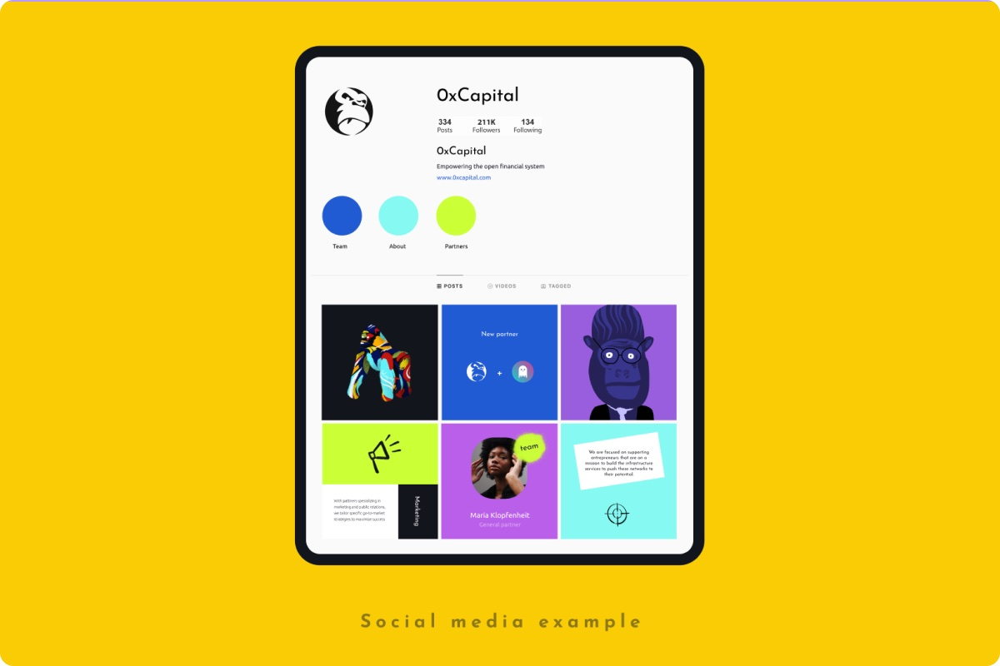

0x Capital
About
0xCapital is an Austrian investment fund that backs crypto and Web3 projects from their earliest stages. The fund needed a brand that would feel native to the Web3 world rather than to traditional finance.
I created the full identity, including the logo, color palette, typography, NFT-style illustrations and hand-drawn doodle icons, and documented it in a brandbook. Then I designed the website for desktop and mobile, with a UI kit for development in Webflow.






